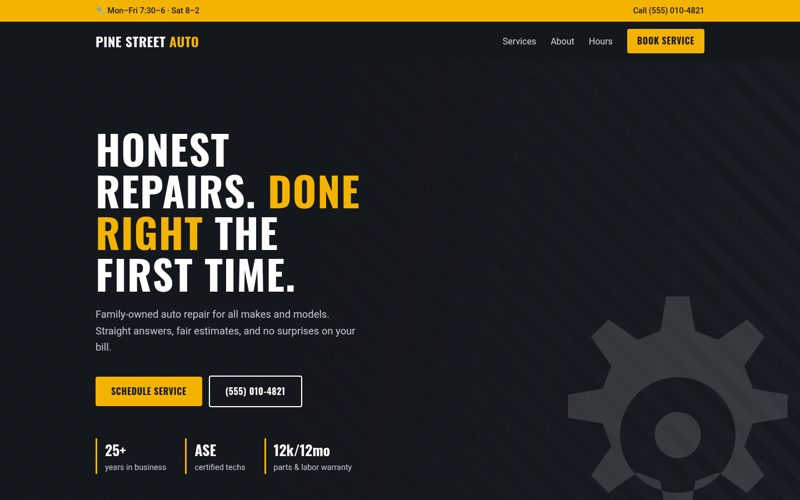
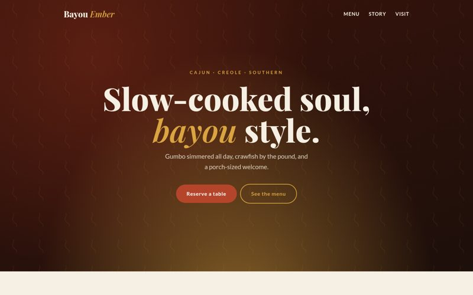
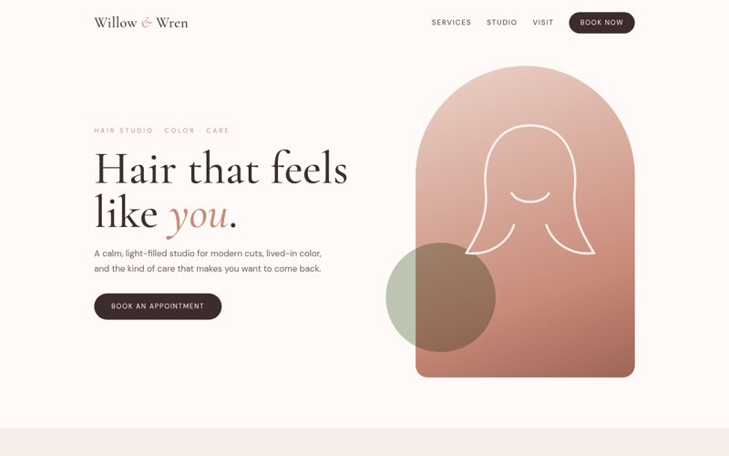

Business websites
Multi-page sites that explain what you do and turn visitors into calls and bookings.
Stateline Web Designs
Clean, fast, mobile-friendly sites designed to win customers — built and launched without the headache.
Services
Multi-page sites that explain what you do and turn visitors into calls and bookings.
Focused single pages for a launch, promotion, or campaign.
Give an outdated site a modern look, faster load times, and a better mobile experience.
Updates, fixes, and content changes so your site stays current.
Work

Demo site
Bold, trust-first site for a local auto shop with services, hours and booking.
View live demo →
Demo site
Warm Cajun & Southern restaurant site with a full menu and reservations.
View live demo →
Demo site
Soft, elegant salon site with a service menu and booking call-to-action.
View live demo →Process
We talk about your business, goals, and customers.
A clean layout and look, reviewed together before any build.
Fast, responsive, accessible code with a live preview link.
Go live on your domain, with help after launch.
About
I'm based in Louisiana, and I started Stateline Web Designs to help local businesses get a website that actually works for them. My day job is as a mechanic, so I'm used to figuring out how things work, fixing what's broken, and doing the job right the first time. I bring that same approach to every site I build.
I keep things simple. You get a clean, fast, mobile-friendly site, a clear price up front, and someone who answers when you call. Whether you need your first website or a refresh of an old one, I'll make it easy.
Contact
Tell me about your project and I'll get back to you.
Email: traceamite@gmail.com